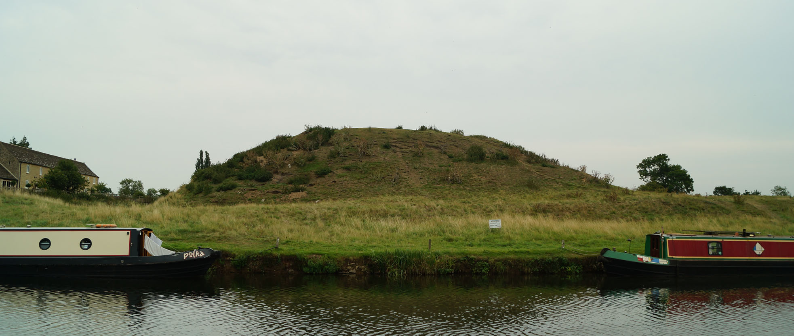
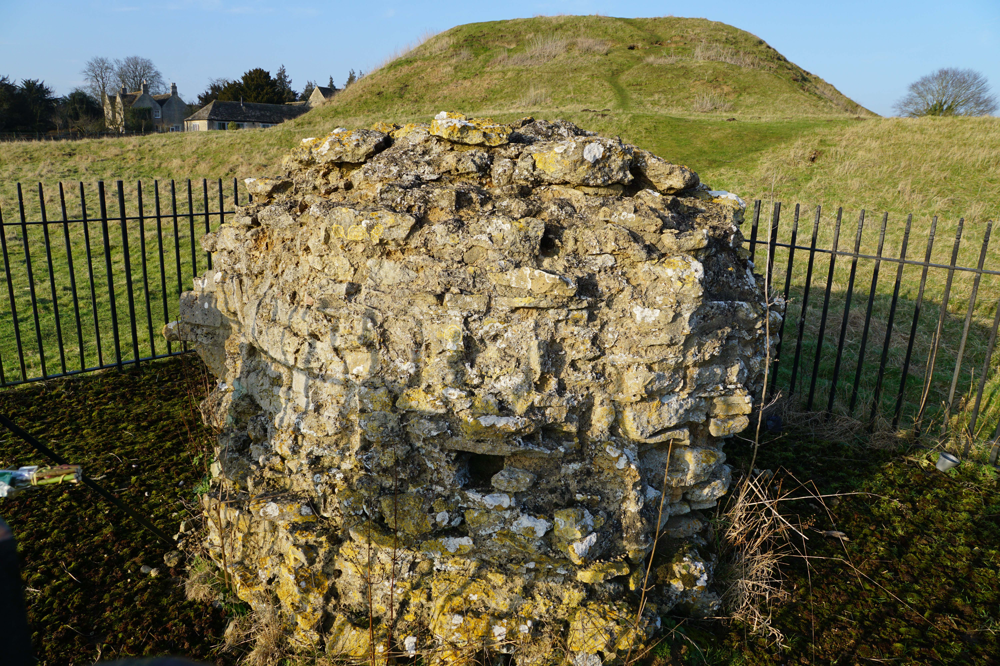
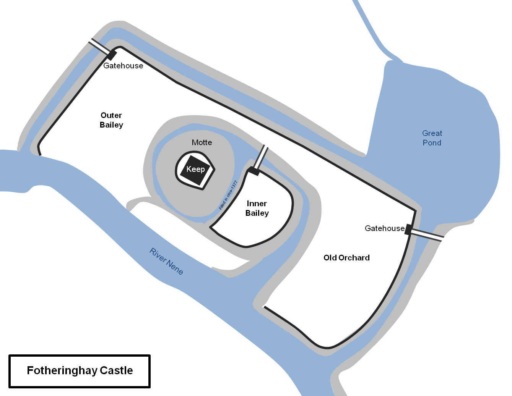
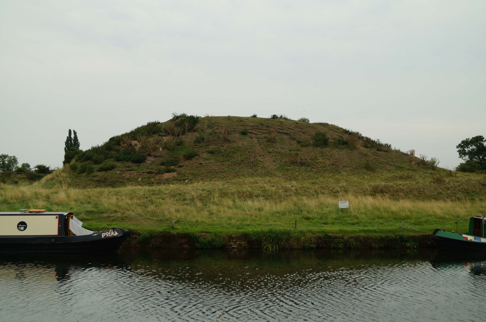

England > Midlands
FOTHERINGHAY CASTLE
Fotheringhay Castle was a motte-and-bailey fortification raised in the early twelfth century by the Earl of Northampton. It was subsequently owned by various Scottish Princes before being incorporated into the Dukedom of York. In 1587 the castle was chosen to host the trial and execution of Mary, Queen of Scots.
History
Gallery
Getting There
At the time of the Norman invasion, Fotheringhay was part of the Earldom of Huntingdon and was owned by Waltheof who was also Earl of Northumbria. Although a native Englishman, he retained his lands after the Conquest by marrying Judith, niece of William I. However, after Waltheof's support for the unsuccessful Revolt of the Earls in 1070, he was executed. Judith, now Countess of Huntingdon, was betrothed to Simon de Senliz, Earl of Northampton but she fled the country rather than be married. Not to be denied the extensive estates that came with the Huntingdon title, Simon married Judith's daughter, Matilda. Having acquired the estates he built Fotheringhay Castle, probably around 1100. The fortification was located to the east of the existing settlement which had been present in one form or another since Roman times and was recorded in the Domesday survey of 1086 as a large village.
Fotheringhay Castle was initially an earth and timber motte-and-bailey fortification. It was constructed on the north bank of the River Nene which provided water for a flooded moat surrounding both the motte and the bailey. The motte would originally have been topped by a timber palisade and, at some point prior to 1341, was augmented with a stone tower. In its original form the castle seemingly only had one bailey which was located to the east of the motte and separated from it by a water filled ditch. This enclosed the key buildings associated with such a site including the Great Hall, kitchen and two chapels. The gatehouse incorporated a drawbridge and was located on the northern side of the bailey.
Simon de Senliz died circa-1113 and was followed by his son, also called Simon. However, Henry I married the widowed Matilda, Countess of Huntingdon to Prince David of Scotland and accordingly Fotheringhay passed to him. David was the heir to the Scottish throne but his newly acquired English estates also made him one of the richest land owners in England. However, in 1135 Henry I died without leaving a male heir and England descended into civil war over who should succeed him. The old King had made his magnates pledge their loyalty to his daughter, Matilda, but after he passed away most switched their support to Stephen of Blois. In Scotland David had become King in 1124 and saw an opportunity to expand his territorial holdings in the north of England. He declared his support for Matilda prompting Stephen to seize his English estates. By contrast Simon de Senliz II supported Stephen's cause and remained loyal to that King even after his capture at the First Battle of Lincoln (1141) . In recognition the King created him Earl of Huntingdon and accordingly Fotheringhay Castle came back under his control. Simon died in 1153 and the Huntingdon estates, including Fotheringhay, were returned to the Scottish King.
By the mid-thirteenth century the castle was owned by the Balliol family who held it against an attack by Robert de Ferrers, Earl of Derby during the Second Barons' War. It was still owned by them in 1292 when Edward I of England was asked to arbitrate on the Scottish succession. He ruled in favour of the castle's then owner, John Balliol, who became King of Scots. Edward had intended for John to become his vassal but he placed him in an impossible position with extensive demands for manpower to support his continental war. In 1294, after John defied King Edward, Fotheringhay was confiscated. Two years later the First War of Scottish Independence erupted in which John was deposed.
In 1377 Richard II granted Fotheringhay Castle to Edmund Langley, Duke of York. He rebuilt much of the fortification including the Great Keep, a square building that once stood on the summit of the motte. He also re-organised the water defences around the castle firstly by constructing the outer moat, which created the Outer Bailey, and he filled in the ditch around the motte on the east side thus directly connecting it to the newly reclassified Inner Bailey. A great pond, which would have been used for provision of fresh fish and eels, was also created at this time. Fotheringhay remained part of the Dukedom of York and in 1452 the future Richard III was born at the castle. Following the accession of Edward of York as King Edward IV, Fotheringhay became property of the Crown.
During the reign of Elizabeth I the castle was used for the imprisonment, trial and execution of Mary, Queen of Scots. She had fled to England in 1568 following the collapse of her regime and, although initially welcomed as a guest, Elizabeth I saw her as a threat and ordered her confinement. After a period held at Carlisle Castle in Cumbria, then Bolton Castle in Yorkshire, she was relocated to Tutbury where she spent most of her 19 year imprisonment. However, as a Catholic she became the focal point for those members of the nobility who wished to overthrow the Protestant Elizabeth I. In Summer 1586 one such individual, Sir Anthony Babington, led a plot to assassinate the English Queen in order to secure a revival of the Roman Catholic faith. Young and indiscreet, his plot was quickly discovered by the formidable security organisation of Sir Francis Walsingham and, after ensuring he had indisputable evidence against Mary, Babington was arrested. He and his co-conspirators were executed in horrific fashion - after being briefly hung they were cut down, revived, castrated and disembowelled alive. For her part in encouraging the plot, Queen Mary was arrested and brought to Fotheringhay Castle were she was put on trial. Despite fears of the Scottish and Spanish retaliation, Elizabeth I signed the death warrant. Mary was executed in Fotheringhay's Great Hall on 8 February 1587.
Fotheringhay Castle was sold into private hands in 1603. Within a few decades stone was being removed from the structure to support other building projects, including construction of nearby Castle Farm, and by the early eighteenth century little masonry remained in place. The interior of the Great Hall itself was gutted and removed to Connington in Huntingdonshire.
Bibliography
Allen, R (1976). English Castles . Batsford, London.
Creighton, O.H (2002). Castles and Landscapes: Power, Community and Fortification in Medieval England . Equinox, Bristol.
Douglas, D.C and Rothwell, H (ed) (1975). English Historical Documents Vol 3 (1189-1327) . Routledge, London.
Douglas, D.C (ed) (1975). English Historical Documents Vol 5A (1559-1603) . Routledge, London.
Historic England (1992). Fotheringhay motte and bailey castle, List entry 1012072 . Historic England, London.
King, C.D.J (1983). Castellarium anglicanum: an index and bibliography of the castles in England, Wales and the Islands . Kraus International Publications.
Liddiard, R (2005). Castles in Context: Power, Symbolism and Landscape 1066-1500 . Macclesfield.
Morris, M (2003). Castle: A History of the Buildings that Shaped Medieval Britain . Windmill Books, London.
Salter, M (2002). Castles of the East Midlands . Folly Publications, Malvern.
Sewell, R.C (1846). Gesta Stephani, Regis Anglorum et Ducis Normannorum .
Venning, T (2013). Kings and Queens of Scotland . Amberley, Stroud.
Williams, A and Martin, G.H (2003). Domesday Book: A Complete Translation . Viking, London.
What's There?
Fotheringhay Castle is a twelfth century motte-and-bailey fortification. Almost all masonry has been removed from the site but the earthwork remains of the Motte and Inner Bailey are impressive.
Fotheringhay Castle Layout . The original twelfth century castle consisted of the motte and Inner Bailey. The outer moat was added in the fourteenth century increasing the footprint of the castle considerably. A sophisticated water management system surrounded the castle providing enhanced defence, fresh water and waste removal.
Motte . The most significant surviving portion of the castle is the earthwork motte. This was originally raised circa-1100 by the Earl of Northampton and, by 1341, was topped with a stone Keep. Both the Keep and the motte were enhanced after 1377 when the castle became the property of Edmund Langley, Duke of York.
Motte . The motte was originally completely surrounded by a water filled ditch but the east portion was filled in during the fourteenth century to connect it to the bailey.
Keep Fragment . This large block of limestone rubble is all that is left from the Great Keep which once stood on top of the motte. It was placed in its current position in 1913
Inner Bailey . The Inner Bailey as viewed from the motte.
Outer Bailey . The castle's outer bailey is now occupied by Castle Farm.
Church of St Mary and All Saints . Work started on this structure in 1411.
Garden Farm . This building was constructed by Edward IV between 1461 and 1476 to provide accommodation for visitors to the castle. The original blocked up entrance can be seen from the road.
Fotheringhay Castle is found at the eastern end of the village. On-road parking is possible in the vicinity.
Car Parking Option
PE8 5HZ
52.525646N 0.437718W
No Postcode
52.524300N 0.436075W
(c) Copyright 2019 CastlesFortsBattles.co.uk
Recovered original photographs, plans and images



